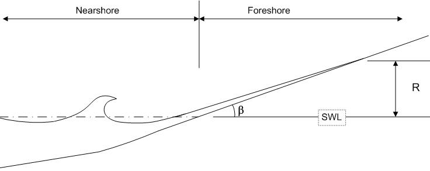

Runup gelombang adalah jarak vertikal maksimum dari kenaikan gelombang pada pantai atau struktur di atas SWL (#sorensen2005basic###). Pada TA ini, data ovservasi ketinggian runup gelombang diukur mulai ketinggian swl, hingga maksimum ketinggian air di daratan. Penjelasan lebih lanjut tentang pengambilan data dijelaskan pada bagian <#440#>kondisiEksperimen<#440#>. Runup gelombang dapat diilustrasikan pada gambar #fig:runup#441>.
<#3610#>Gambar<#3610#>:
<#3612#>Ilustrasi Runup gelombang oleh Mike Swenson, Coastal Morphology, University of Wisconsin-Madison (#MikeSwenson:WaveRunup###).<#3612#>

|
Pada gambar #fig:runup#450>, SWL (Sea Water Level) adalah ketinggian Air Normal ketika tidak ada gelombang. Wilayah Pantai (Foreshore), dimulai dari titik SWL yang berpotongan dengan daratan. Wilayah lautan (Nearshore), dimulai dari titik SWL yang berpotongan dengan air. Ketika titik potong air dengan daratan berada di atas SWL, maka kondisi tersebut dinamakan dengan runup. Ketinggian runup dinotasikan dengan #tex2html_wrap_inline3615#�. Simbol #tex2html_wrap_inline3617#� melambangkan kemiringan bibir pantai.